2026-11-02T20:28:09.123Z · ltx-2.5, no references, one prose prompt from a story and the guide · 720 credits · 6 LLM calls (gpt-6.1-sol) · docs: V3/docs/02-case-1-text-only.md
Brief. Contact: on the bridge of the Resolute, the lookout spots an enemy cruiser and points it out, Captain Vale confirms through her binoculars, the tactical screen tracks it, and Vale gives the command to fire. (Sequence 1 of 3 of 'Resolute: Contact, Salvo, Confirmation'.)
Not judged yet.
Inside a narrow steel bridge with slanted front windows, a central chart table, and cool overhead lamps, Captain Vale, a woman with cropped dark hair, a navy double-breasted coat, and brass binoculars, confirms the contact. The lookout, a young man with curly black hair, a navy sailor shirt, and a red headset, points through the glass at a pale-gray cruiser with one raked funnel and a white stripe across its bow. The helmsman, a woman with a blond braid, a navy sailor shirt, and rolled sleeves, holds course. Beside them sits a small square tactical screen with a thick black bezel and amber graphics. Vale lowers her binoculars: “Fire main battery!” BIBLE (use these words for these things, every time): captain_vale = a woman with cropped dark hair, a navy double-breasted coat, and brass binoculars; lookout = a young man with curly black hair, a navy sailor shirt, and a red headset; helmsman = a woman with a blond braid, a navy sailor shirt, and rolled sleeves; bridge = a narrow steel bridge with slanted front windows, a central chart table, and cool overhead lamps; sea = an open slate-blue sea with low swells, a flat horizon, and thin overcast; resolute = a dark-gray dreadnought battleship with twin-gun main turrets and a red band around its forward funnel; enemy_cruiser = a pale-gray cruiser with one raked funnel and a white stripe across its bow; tactical_screen = a small square tactical screen with a thick black bezel and amber graphics. Light and grade: Cold late-afternoon daylight, cool steel-blue shadows, restrained saturation, and warm amber screen light; realistic naval-war-film photography..
| kind | fiction |
| people | a woman with cropped dark hair, a navy double-breasted coat, and brass binoculars; a young man with curly black hair, a navy sailor shirt, and a red headset; a woman with a blond braid, a navy sailor shirt, and rolled sleeves |
| place · time · mood | bridge, aboard resolute · Late afternoon · Controlled tension turning into decisive action |
| exact words | none |
| seconds · aspect · sound | 15 s (from the sequence plan) · 16:9 · dialogue (Dialogue makes the sighting and fire order unmistakable. Low engine vibration and wind beneath the voices establish the working bridge; no music competes with the command.) |
| progression |
|
| specific · first frame | none · none |
{
"prose": "Inside a narrow steel bridge with slanted front windows, a central chart table, and cool overhead lamps, Captain Vale, a woman with cropped dark hair, a navy double-breasted coat, and brass binoculars, confirms the contact. The lookout, a young man with curly black hair, a navy sailor shirt, and a red headset, points through the glass at a pale-gray cruiser with one raked funnel and a white stripe across its bow. The helmsman, a woman with a blond braid, a navy sailor shirt, and rolled sleeves, holds course. Beside them sits a small square tactical screen with a thick black bezel and amber graphics. Vale lowers her binoculars: “Fire main battery!”\n\nBIBLE (use these words for these things, every time): captain_vale = a woman with cropped dark hair, a navy double-breasted coat, and brass binoculars; lookout = a young man with curly black hair, a navy sailor shirt, and a red headset; helmsman = a woman with a blond braid, a navy sailor shirt, and rolled sleeves; bridge = a narrow steel bridge with slanted front windows, a central chart table, and cool overhead lamps; sea = an open slate-blue sea with low swells, a flat horizon, and thin overcast; resolute = a dark-gray dreadnought battleship with twin-gun main turrets and a red band around its forward funnel; enemy_cruiser = a pale-gray cruiser with one raked funnel and a white stripe across its bow; tactical_screen = a small square tactical screen with a thick black bezel and amber graphics. Light and grade: Cold late-afternoon daylight, cool steel-blue shadows, restrained saturation, and warm amber screen light; realistic naval-war-film photography..",
"kind": "fiction",
"needs_research": false,
"research_why": "",
"people": [
"a woman with cropped dark hair, a navy double-breasted coat, and brass binoculars",
"a young man with curly black hair, a navy sailor shirt, and a red headset",
"a woman with a blond braid, a navy sailor shirt, and rolled sleeves"
],
"place": "bridge, aboard resolute",
"time": "Late afternoon",
"mood": "Controlled tension turning into decisive action",
"exact_words": [],
"seconds": 15,
"seconds_why": "from the sequence plan",
"aspect": "16:9",
"sound": "dialogue",
"sound_why": "Dialogue makes the sighting and fire order unmistakable. Low engine vibration and wind beneath the voices establish the working bridge; no music competes with the command.",
"progression": [
"Inside the ship, on the bridge, the captain and crew spot the enemy ship.",
"The captain gives the command to fire."
],
"specific": [],
"first_frame": "",
"carried": []
}1932 characters (limit 2,000) · 5 beats · 5 shots · code check: length yes exact words yes
FORMATCreate a 15-second cinematic naval-war scene aboard Resolute, widescreen 16:9. LOOKRealistic photography, cold late-afternoon daylight, steel textures, controlled tension and decisive pacing. CONTINUITYFive coherent shots preserve Vale, a woman with cropped dark hair, a navy double-breasted coat, and brass binoculars; lookout, a young man with curly black hair, a navy sailor shirt, and a red headset; helmsman, a woman with a blond braid, a navy sailor shirt, and rolled sleeves; bridge, a narrow steel bridge with slanted front windows, a central chart table, and cool overhead lamps; sea, an open slate-blue sea with low swells, a flat horizon, and thin overcast; Resolute, a dark-gray dreadnought battleship with twin-gun main turrets and a red band around its forward funnel; enemy cruiser, a pale-gray cruiser with one raked funnel and a white stripe across its bow; tactical screen, a small square tactical screen with a thick black bezel and amber graphics. BEAT 10–3 seconds: medium over-shoulder view, lookout, red headset visible, points out the enemy cruiser through the glass against the sea; lateral slide. BEAT 23–6 seconds: tight profile, Vale, binoculars raised, confirms the contact through them, window reflections across her face; slow push in. BEAT 36–9 seconds: insert close-up, tactical screen, amber graphics visible, tracks the cruiser with a moving contact marker, steel console surrounding it; gentle push in. BEAT 49–12 seconds: medium close-up, Vale, binoculars raised, commands fire, cool lamps behind her; short push in. BEAT 512–15 seconds: wide establishing view of the bridge, Vale, binoculars raised, and crew standing still beside the chart table; ease back into a final hold. Sound: low engine rumble, faint hull creaks; 9–12 seconds, Vale says, "Fire main battery!" HOLDHold the final image still for the last two seconds. GRADECool steel-blue shadows, restrained saturation, warm amber highlights. NEGATIVESNo subtitles, text overlays, music or gunfire.
| # | range | shows |
|---|---|---|
| 1 | 0–3 s | Lookout points out the enemy cruiser through the bridge windows. |
| 2 | 3–6 s | Vale confirms the contact through her binoculars. |
| 3 | 6–9 s | Tactical screen tracks the cruiser with a moving contact marker. |
| 4 | 9–12 s | Vale gives the command to fire. |
| 5 | 12–15 s | Wide bridge establishing view, Vale and crew standing still. |
The MCP has not been run on this brief.
# The operational prompt (text-to-video)
The Magic Hour guide says: specify the subject, one action, camera move, framing and mood; request only audio and
duration the model supports; then review the actual result. The prompt that works is ONE prose paragraph, under 2,000
characters, in this order:
1. FORMAT: the duration, the kind of piece, the subject, the aspect, in one sentence.
"Create a 16-second cinematic advertisement for Petal & Stem, a small neighbourhood flower shop. Widescreen 16:9."
2. LOOK: medium, light, mood, the texture of the world, in one sentence. For action, the look line also carries the
ENERGY in plain words ("tight, fast-paced editing, roaring engines, cars accelerating hard, streetlights streaking
past"): the model renders the pace it is told, and a race described calmly comes out slow.
"Photorealistic, intimate, warm natural dawn sunlight, soft golden highlights, authentic lived-in neighbourhood."
3. CONTINUITY: how many shots, and what stays the same across them, in one sentence.
"Four coherent shots with natural edits, same florist, shop and bouquet throughout."
4. BEATS: timed ranges that together cover the whole duration, in order. Each beat, in this order: the time range,
the framing, the subject with one identifying detail, ONE action, one environment detail, the camera or lens.
"0–4 seconds: exterior medium-wide shot at dawn, an adult florist in a sage-green apron unlocks and opens the
wood-and-glass shop door, warm sunlight on the flower buckets beside the entrance."
One action per beat. Never two things happening. Never a thing that must appear later mentioned early.
The request's own verbs are the beats' actions and each gets its own beat: "arranges a bouquet" is a beat of hands
placing stems, and wrapping is a different action; do not merge two of the request's actions into one beat.
When possession changes, the beat ends with the new state stated plainly: "the customer now holds the bouquet, the
florist's hands are empty".
The last beat is a separate establishing shot with no new action: the place alone, or the people standing still.
Every beat has a camera MOVE (push, slow orbit, lateral slide, ease back, handheld follow), never "stationary" or
"locked-off" except the final hold. Name the key object concretely once (blush pink roses, cream flowers, brown
kraft paper), not "a bouquet"; the model renders nouns it is given.
A beat is 3–6 seconds, so a 16-second clip has 3–5 beats and a 30-second clip 5–8. Two-second beats make a
cut every two seconds, which the model renders as a jumble; the shot count in CONTINUITY equals the beat count.
5. EXACT WORDS: any lettering the video must show, quoted once, inside the beat where it is seen.
"clear tasteful shop sign reads exactly 'Petal & Stem'."
6. SOUND (only when audio is on): ambient, or the character of music, or the spoken lines quoted with their time
range and who speaks. Narration and dialogue are the expensive part of the budget; keep them short.
7. HOLD: the last beat ends on a still, readable image. "Hold on the storefront for the final two seconds."
8. GRADE: colour treatment and pacing, one short sentence. "Gentle cinematic colour grade, calm uplifting pacing."
9. NEGATIVES: one line, last, only what the model would otherwise add. "No voiceover, no subtitles, no text overlays."
Quality words are descriptive, never technical: cinematic, photorealistic, shallow depth of field, natural hands and
anatomically correct movement, realistic textures. No resolution words, no "8k", no seeds, no camera brands.
Never: shot-list headings, a separate negatives block, a constraint on every sentence, "do not show X" for things that
appear later, repeating a sentence, a sign mentioned in a beat where it must not be seen.
Budget: about 450 characters go to format, look, continuity, hold, grade and negatives. The rest is beats, about 200
characters each. Compress the story into the beats; do not paste it.
# Image-to-video (a start frame is supplied)
Same slots, same order, two changes:
- FORMAT shrinks to the duration and "matching the source image" (the aspect is the image's).
- LOOK becomes PRESERVE: name what the image already fixes and must stay: "Preserve the woman's face, dark hair in a
low bun and cream jacket, and the bouquet of yellow, magenta, cream and red flowers in pale paper, exactly as in the
image; keep the morning light and the doorway."
- The first beat describes the image as it is and the first motion out of it, so the model continues the picture
instead of cutting away. Later beats may cut, with the continuity sentence naming the same people and the bouquet by
the same words every time.
# When people carry the scene (a handoff, a conversation, a reunion)
The MCP's scene 2 clip read as more alive than ours with the same still route. The differences were in the prompt:
- ONE continuous shot with a very slow push in, not five cuts in 16 seconds. On image-to-video every cut abandons the
start frame; one shot keeps the faces and lets a performance develop.
- Performance verbs and eye lines in every beat: "exchanging warm eye contact", "he smiles warmly and reaches out with
both hands", "they exchange affectionate smiles", "she steps close beside him". Behaviour, not inventory.
- A physically ordered action: "only after he has a firm grip does she release it".
- PRESERVE is three anchors per person (hair, one garment, one detail) and one line for the object, said once. The
identity is in the start frame; a 600-character inventory repeated in every beat buys nothing and starves the beats.
- End on the faces: "a stable medium two-shot showing both faces and the bouquet, hold three seconds", not a wide
establishing shot of people standing still.
- Framing: the seed still should be a medium shot where faces are large enough to act; a medium-wide doorway reads
as staging.
| call | text-to-video · model ltx-2.5 · 15 s · 16:9 · 480p · audio on · references none |
| credits · time | 360 credits · 44 s wall · rendered 15 s |
| prompt sent | the operational prompt above, unchanged |
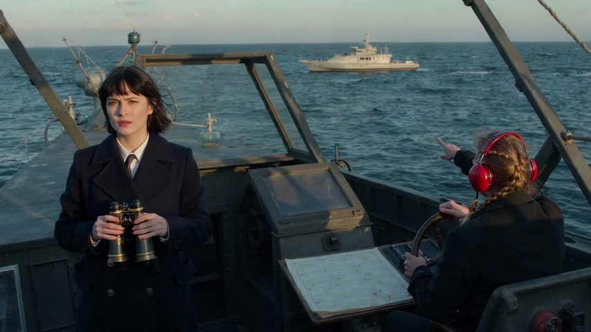
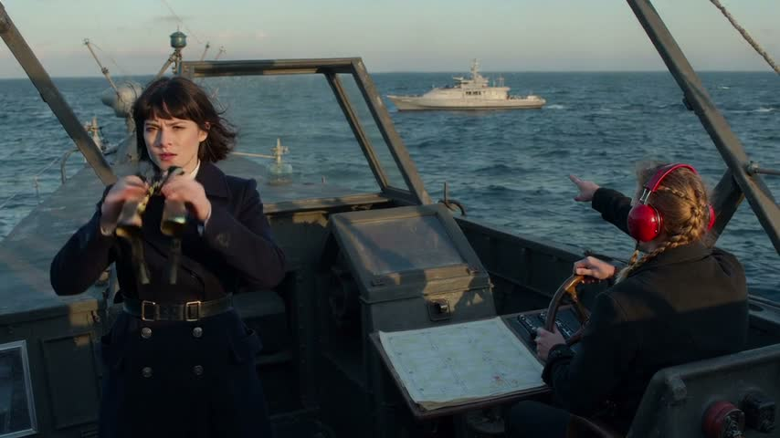
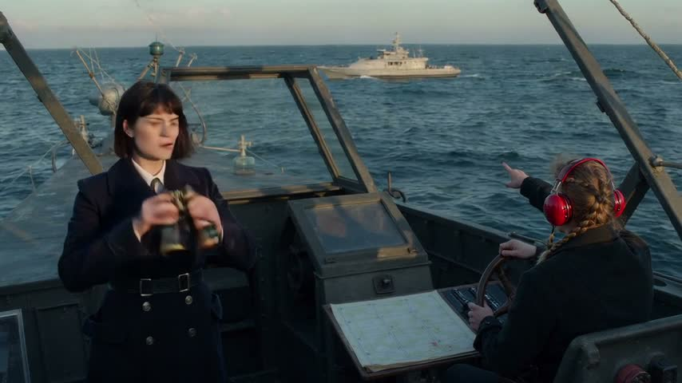
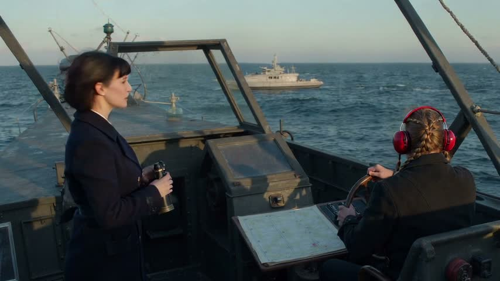
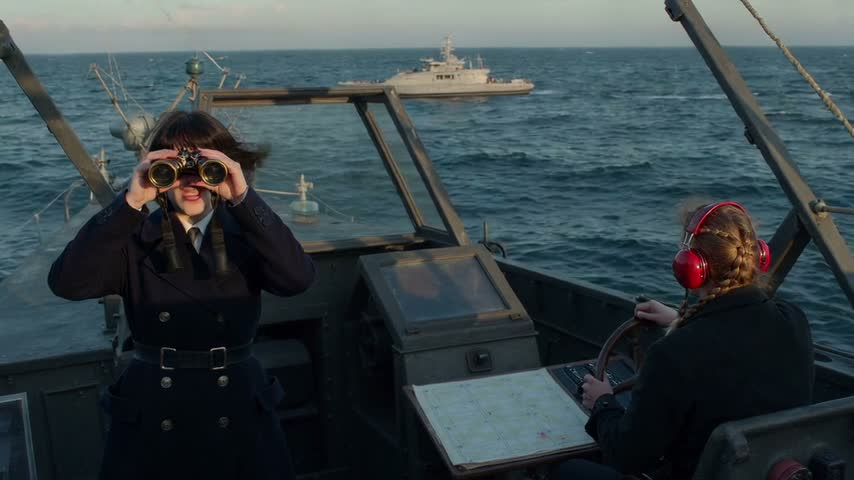
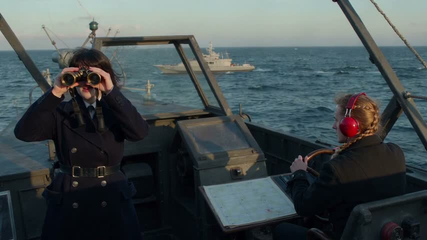
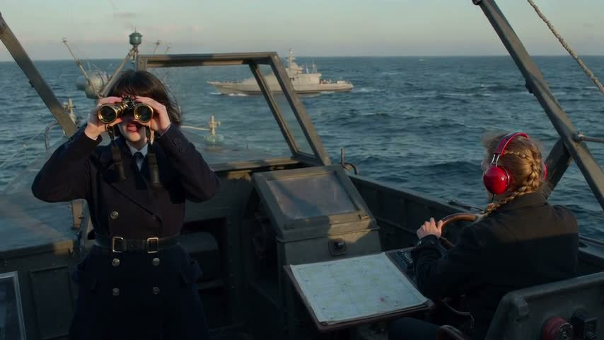
| beat | subject present | action seen | evidence |
|---|---|---|---|
| 1 | yes | yes | Headset-wearing lookout points toward the cruiser beyond the bridge windows. |
| 2 | yes | no | Vale holds binoculars below her face rather than looking through them. |
| 3 | no | no | Bridge view continues; no tactical display or moving contact marker is visible. |
| 4 | yes | yes | Vale's mouth is open behind raised binoculars; the transcript places the firing command here. |
| 5 | yes | no | Wide bridge view includes Vale, but the other crew member remains seated at the wheel. |
| exact words | none required |
| same people and place | yes |
| last frame holds | unclear |
| lines asked vs heard | “Vale: "Fire main battery!"” → heard “[9.4–10.6 s] "Fire main battery?"” yes on time yes voices consistent: unclear |
| transcript (whisper-1) | [0–3 s] Fire main battery! [3–6 s] Fire main battery! [9.4–10.6 s] Fire main battery? [13.8–15.3 s] Fire main battery! |
| artifacts | none noted |
| failures | beat 2 (3–6 s) must visibly show the action: Vale confirms the contact through her binoculars. (seen instead: Vale holds binoculars below her face rather than looking through them.); beat 3 (6–9 s) must show Tactical screen tracks the cruiser with a moving contact marker.; beat 5 (12–15 s) must visibly show the action: Wide bridge establishing view, Vale and crew standing still. (seen instead: Wide bridge view includes Vale, but the other crew member remains seated at the wheel.) |
| call | text-to-video · model ltx-2.5 · 15 s · 16:9 · 480p · audio on · references none |
| credits · time | 360 credits · 38 s wall · rendered 15 s |
| failures folded in | beat 2 (3–6 s) must visibly show the action: Vale confirms the contact through her binoculars. (seen instead: Vale holds binoculars below her face rather than looking through them.); beat 3 (6–9 s) must show Tactical screen tracks the cruiser with a moving contact marker.; beat 5 (12–15 s) must visibly show the action: Wide bridge establishing view, Vale and crew standing still. (seen instead: Wide bridge view includes Vale, but the other crew member remains seated at the wheel.) |
| prompt sent | Create a 15-second naval-war scene aboard Resolute, 16:9. Realistic photography, cold late-afternoon daylight, steel textures, tension, decisive pacing. Five coherent shots preserve Vale, a woman with cropped dark hair, navy double-breasted coat and brass binoculars; lookout, a young man with curly black hair, navy sailor shirt and red headset; helmsman, a woman with blond braid, navy sailor shirt and rolled sleeves; bridge, narrow steel with slanted front windows, central chart table and cool lamps; sea, slate-blue, low swells, flat horizon, thin overcast; Resolute, dark-gray dreadnought, twin-gun main turrets, red band around forward funnel; enemy cruiser, pale-gray, one raked funnel, white bow stripe; tactical screen, small, square, thick black bezel, amber graphics. 0–3 seconds: medium over-shoulder, lookout, headset visible, points out enemy cruiser through glass against sea; lateral slide. 3–6 seconds: tight profile, Vale presses both binocular eyepieces to her eyes, visibly looks through to confirm contact, window reflections across her face; slow push in. 6–9 seconds: insert close-up, tactical screen tracks cruiser: amber contact marker visibly moves across screen throughout shot, steel console surrounding it; gentle push in. 9–12 seconds: medium close-up, Vale, binoculars raised, commands fire, cool lamps behind; short push in. 12–15 seconds: wide bridge view, Vale, binoculars raised, and all crew, including lookout and helmsman, stand still beside chart table, upright bodies and planted feet visible; ease back into final hold. Sound: low engine rumble, faint hull creaks; 9–12 seconds, Vale says, "Fire main battery!" Hold the final image still for the last two seconds. Cool steel-blue shadows, restrained saturation, warm amber highlights. No subtitles, text overlays, music or gunfire. |
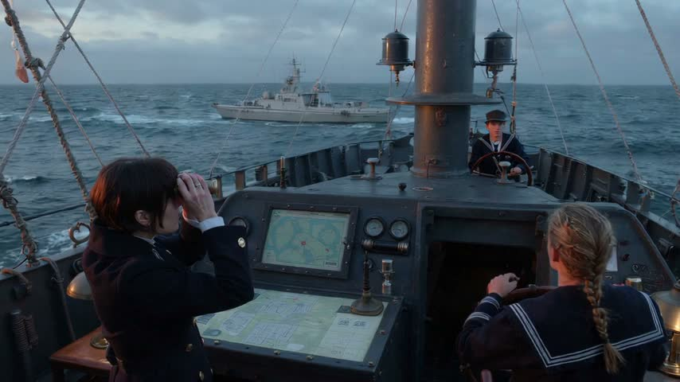
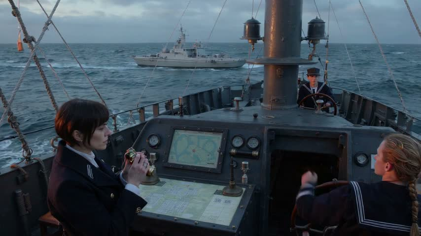
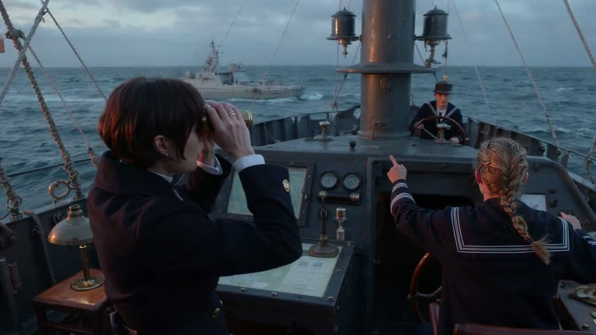
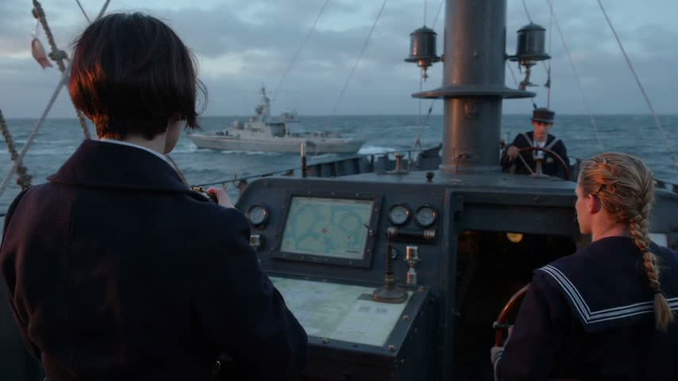
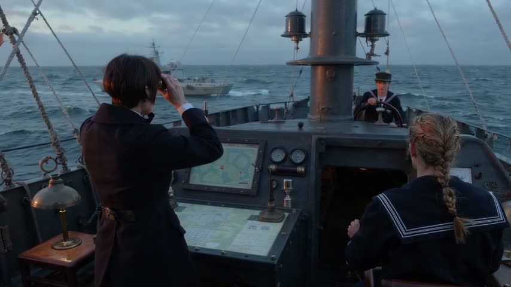
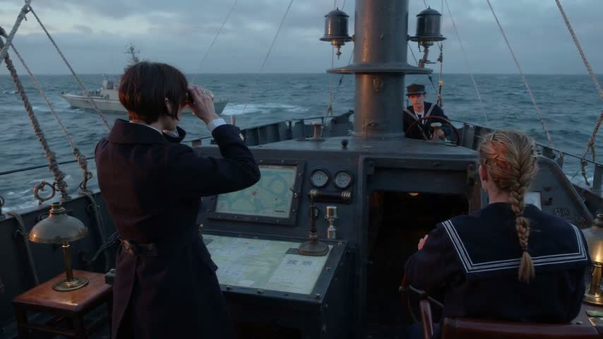
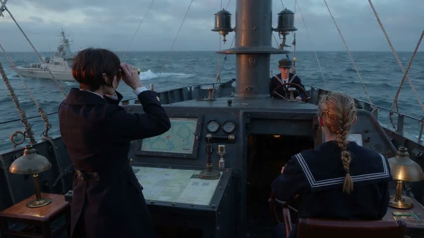
| beat | subject present | action seen | evidence |
|---|---|---|---|
| 1 | yes | no | Lookout and cruiser are visible, but no clear pointing gesture; the bridge is open, without windows. |
| 2 | yes | yes | Vale holds binoculars to her eyes toward the cruiser. |
| 3 | yes | unclear | Console screen shows a map and red marker; marker movement cannot be established from the sampled frame. |
| 4 | yes | unclear | Vale is visible using binoculars. The transcript places the command at 9–10 seconds, but does not identify its speaker. |
| 5 | yes | no | Wide bridge view includes Vale and crew, but the foreground sailor is seated rather than standing; stillness is unconfirmed. |
| exact words | none required |
| same people and place | yes |
| last frame holds | unclear |
| lines asked vs heard | “Vale: "Fire main battery!"” → heard ““Fire main battery!” at 9–10 seconds; also repeated at 0–1 and 4–5 seconds.” yes on time yes voices consistent: unclear |
| transcript (whisper-1) | [0–1 s] Fire main battery! [4–5 s] Fire main battery! [9–10 s] Fire main battery! |
| artifacts | none noted |
| failures | beat 1 (0–3 s) must visibly show the action: Lookout points out the enemy cruiser through the bridge windows. (seen instead: Lookout and cruiser are visible, but no clear pointing gesture; the bridge is open, without windows.); beat 5 (12–15 s) must visibly show the action: Wide bridge establishing view, Vale and crew standing still. (seen instead: Wide bridge view includes Vale and crew, but the foreground sailor is seated rather than standing; stillness is unconfirmed.) |
clip-1-retry.mp4 · review FAIL · state record: a woman with cropped dark hair, a navy double-breasted coat, and brass binoculars; a young man with curly black hair, a navy sailor shirt, and a red headset; a woman with a blond braid, a navy sailor shirt, and rolled sleeves at bridge, aboard resolute, Late afternoon; words seen: none; last frame frames/clip-1-retry-last.jpg[
{
"clip": "clip-1-retry.mp4",
"seconds": 15,
"people": [
"a woman with cropped dark hair, a navy double-breasted coat, and brass binoculars",
"a young man with curly black hair, a navy sailor shirt, and a red headset",
"a woman with a blond braid, a navy sailor shirt, and rolled sleeves"
],
"place": "bridge, aboard resolute",
"time": "Late afternoon",
"mood": "Controlled tension turning into decisive action",
"words_seen": [],
"last_frame": "frames/clip-1-retry-last.jpg"
}
]| # | kind | what | credits |
|---|---|---|---|
| 1 | LLM | (sequence record from the sequencer) · the story record from the request | 0 |
| 2 | LLM | v3-prompt-v1 · the operational prompt from the sequence and the guide | 0 |
| 3 | LLM | v3-review-v1 · review of clip-1 on 7 frames | 0 |
| 4 | LLM | v3-prompt-fix-v1 · the prompt with the review's failures folded in | 0 |
| 5 | LLM | v3-prompt-shorten-v1 · the fixed prompt was over the limit | 0 |
| 6 | LLM | v3-review-v1 · review of clip-1-retry on 7 frames | 0 |
| 7 | text-to-video | /v1/text-to-video · ltx-2.5 15 s 480p audio on · 44 s | 360 |
| 8 | ffmpeg | frames of clip-1: first, each beat's middle, last | 0 |
| 9 | whisper-1 | transcript of clip-1 with timed segments | 0 |
| 10 | text-to-video | /v1/text-to-video · ltx-2.5 15 s 480p audio on · 38 s | 360 |
| 11 | ffmpeg | frames of clip-1-retry: first, each beat's middle, last | 0 |
| 12 | whisper-1 | transcript of clip-1-retry with timed segments | 0 |
| total | 720 |
LLM usage: 5 calls, 14731 in / 3384 out tokens